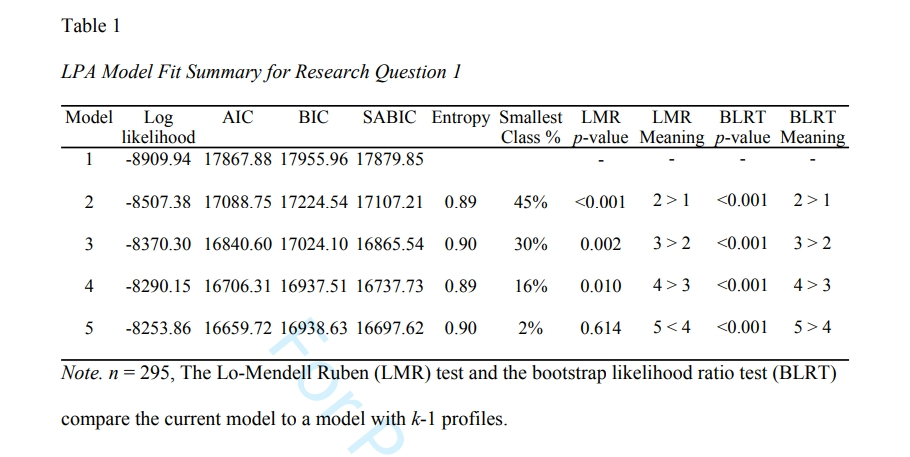
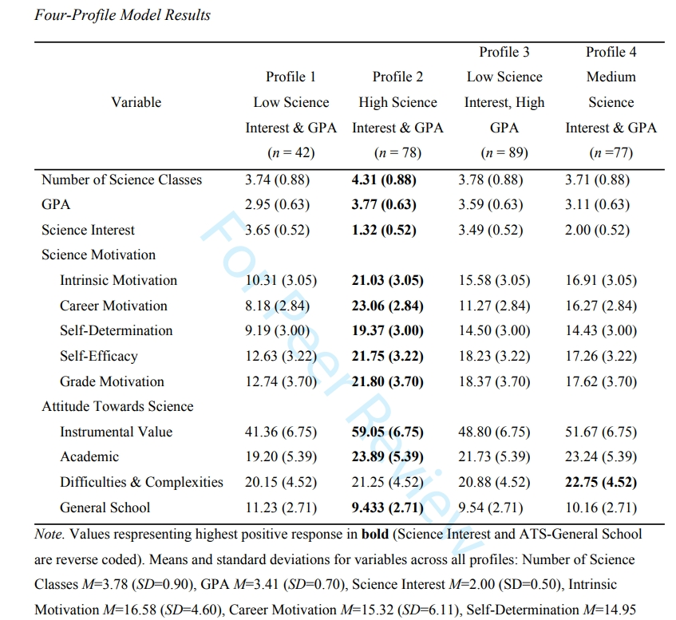
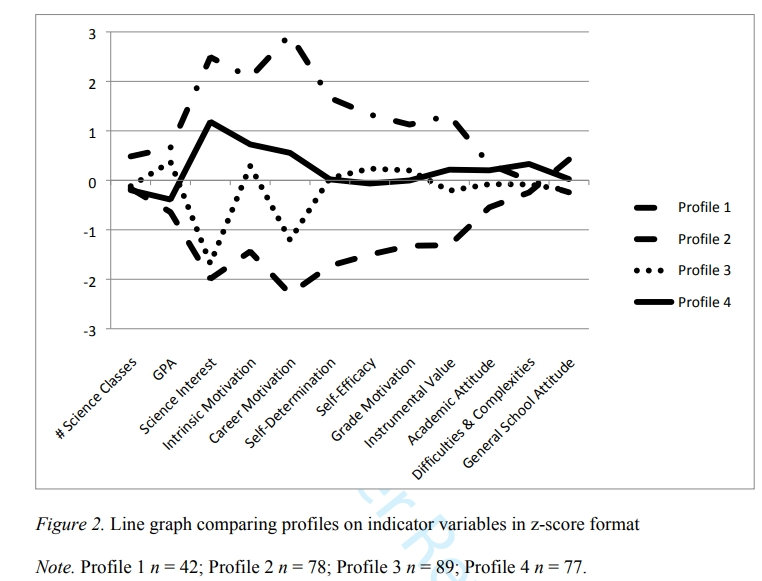
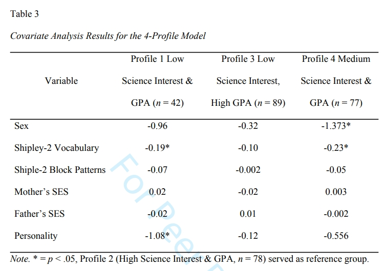

本教程提供了在 Mplus 软件系统中进行潜在剖面分析 (LPA) 的实用指南。 本指南适用于熟悉某些潜在变量建模但不熟悉 LPA 的研究人员。 进行 LPA 的一般程序分为六个步骤：(a) 数据检查，(b) 模型的迭代评估，(c) 模型拟合和可解释性，(d) 调查保留模型中的剖面模式，(e) 协变量分析，以及 (f) 结果呈现。
本教程提供了代码和结果解读, 以及帮助理解的示例来举例。
关键词: Latent Profile Analysis, Mplus
Latent Profile Analysis 潜在剖面分析的概述
潜在剖面分析 (LPA) 和潜在类别分析 (LCA) 是通过个体属于不同组的概率来揭示数据中潜在组的技术。
这是通过检查数据中各组的分布并确定这些分布是否有意义来实现的。
事实上，LCA 和 LPA 经常使用广义术语“混合模型”来提及。 LCA 和 LPA 之间的区别在于根据观测指标的类型来定义。
在 LCA 中，观测指标是类别变量，类似于二项式模型（有关更多信息，请参阅 Masyn，2013 和 Nylund-Gibson & Choi，2018）。
在 LPA 中，观察到的变量是连续的，类似于高斯模型（Oberski，2016）。
此外，还有潜在转换分析（LTA），它是包含两个或多个潜在类或潜在构念构造的任何模型；
这些构造可以通过不同的指标或在不同时间点测量的相同指标作为纵向延伸来了解（有关工作示例，请参见 NylundGibson、Grimm、Quirk 和 Furlong，2014）。
刚接触 LPA 的研究人员可以将LPA类比于常见的模型（例如验证性因子分析 (CFA)），因为 LPA 也是使用协方差矩阵来探索观测数据和潜在变量之间的关系（Bauer & Curran，2004；Bergman & Magnusson，1997） , 但是CFA是将题目分组, 而LPA是将被试分组, CFA 使用项目协方差矩阵来揭示潜在结构，而 LPA 使用个体矩阵来揭示潜在人群。 在项目协方差矩阵中每个数字是题目之间的协方差(相关), 而在个体矩阵中, 每个数字是个体之间的协方差(相关)（Bauer & Curran，2004，第 6 页）。
LPA 分多个步骤进行，类似于结构方程建模 (SEM) 分析。 例如，在 SEM 中，研究人员通常会拟合概念模型，检查测量模型，拟合一系列结构模型以确定数据与其理论模型的最佳拟合（Bauer & Curran，2004；Kline， 2011）。 对于 LPA，该过程类似，研究人员通过迭代建模过程来确定要分类的数量，拟合协变量模型以探索这些分类变量对研究中其他变量的影响（Masyn， 2013 年；斯特巴，2013 年）。 如果研究人员还有一个分类变量想要比较剖面结构，他们可以进行多组 LPA，包括测量不变性（Morin、Meyer、Creusier 和 Bietry，2016）。
案例
本胶层提供了一个使用 LPA 分析数据的案例，以引导读者完成 LPA 过程。 此示例的数据来自其他地方发表的一项更大规模的实证研究（参见作者，2018 年）。 此处的数据仅用作演示 LPA 的示例，而不是结果的理论含义。 数据收集自美国南部一个公立学区 295 名 11 年级和 12 年级的高中生。
LPA 被用作本研究的主要推断分析方法。 所有潜在特征分析均使用 Mplus 8（Muthén & Muthén，1998-2017）和最大似然估计进行。
LPA 用于两个应用：第一个是用于探索科学职业偏好的潜在分类, 第二个是用于检验这个分类的组间差异.
这个研究的研究问题是:
- 基于科学动机、科学态度、科学兴趣和科学成就的测量，如何定义潜在类别来代表科学职业选择的职业偏好？
- 按性别、社会经济地位、性格和认知能力划分的科学职业偏好的群体差异有多大？
LPA具体步骤

第一步, 数据清理
与所有分析一样，应清理数据以进行分析，并检查基本的统计假设（例如，连续变量的正态性、样本之间的独立性；参见 Osborne，2012）。 在题目层面上的缺失数据可以使用Mplus的最大似然估计值。 如果一个变量下的所有题目都是缺失, 可以使用全信息最大似然 (FIML) （即复合水平缺失）的情况。如果你想学习这些缺失处理的方法 , 可以在下方留言, 我们有专门的教程. 如果所有变量下的所有题目都是缺失, 那毫无疑问就该把这个样本删除. 与其他潜在变量分析一样，缺失数据可以通过 FIML 或多重插补来处理，具体取决于哪种情况最适合。 当使用大型数据集来回答不同的研究问题，或者在估计模型时使用估算数据集而不是最大似然估计来处理缺失值以减轻模型收敛的计算负担时，建议使用多重插补 （巴拉尔迪和恩德斯，2010）。 在本案例中, 我们使用的是FIML, 它往往可以处理较小的数据集, 使用mplus处理缺失值时, 你往往可以参考Osborne (2012) 或者 Mplus手册的 Chapter 11 (Muthén & Muthén, 1998-2017) . 另外需要注意的是, 本研究在做LPA的时候, 观测指标是合成的变量, 而不是题目级别的变量.
第二步, 分析一系列假设合理的 LPA 模型
从只有一个类别的的模型开始，直到估计 5 或 6 个分类的模型结束（Masyn，2013 年；Tein 等人，2013 年）。在下面的代码块中我们列出了本研究中使用的mplus代码. 你需要知道, 首先 CLASSES 命令出现在 USEVARIABLES 后面, 用于设定想要分类的类别数. 所以对于1个分类的模型, CLASSES 设定为 c(1), 对于两分类模型, CLASSES 设定为 c(2). 其次, 分析的方法指定的是 mixture , 因为LPA LCA 都属于 混合模型.
1 | TITLE: LPA generic 2 profile syntax example |
步骤三, 模型拟合和解释
在示例中， 模型 1 仅使用一个类别进行估计，模型 2 使用两个类别进行估计，依此类推，模型 5 使用五个类别进行估计。 下表提供了模型拟合统计数据。
表格里面的数据都是来自 TECH11 和 TECH14 , 这些指标解释如下:
- 信息评价指标（AIC, BIC, aBIC）：越小越好。
- Entropy指数：表示分类精确程度，取值范围为0到1，越接近1表明分类越精确。
- 似然比指标（LMR, BLRT）：显著的LMR、BLRT值表明K个类别的模型优于K-1个类别的模型。
根据表格中的结果, 模型4(有4个分类)的结果是最优的, 理由如下:
- 分类数越小越好,因为类别越少我们人类越容易理解
- AIC BIC aBIC 都是越小越好, 综合来看, 最小的应该是模型5, 但是模型4和模型5比较, 三个指标差别很小
- 从LMR检验来看, 模型5与模型4的差别不显著, 意味着尽量选择分类数较少的比较好, 而模型4与模型3的差别显著, 所以还必须得选模型4
- 模型5的最小分类只占总样本的2%(n=6), 这是一个非常小的占比, 这种小众的分类可能是不稳定的
第四步, 解释各组的模式
这种解释可以利用下面的表格:表格中的数字是各组在各个题目和变量上的均值+标准差.
为每个类别计算变量的平均值和标准差，并且发现所有这些变量在模型中都具有统计显着性。 请注意，标准差与默认情况下限制在 Mplus 中的标准差相同。 四个潜在群体之间的差异很大程度上是由于兴趣、动机和对科学的态度的差异，这与研究中使用的理论方法是一致的.
下面这个折线图非常清楚的说明了各个潜在群体的差异:
第五步是协变量分析
当出现以下情况时，应进行协变量分析：
- a) LPA 分析表明存在值得进一步解释的类别
- b) 有理论上的理由来评估协变量对类别潜变量的影响。
要将协变量添加到模型中, 可以在 Mplus 中进行并发分析，请从第二步中的代码开始。 不过，这次将协变量的变量信息添加到 NAMES 和 USEVARIABLES 行。
此外，在语法的 MODEL 部分中，指定模型关系。 根本本研究的实例，原始研究中使用了两步方法（有关所有方法的 Mplus 语法示例，请参阅补充文件）。 语法子命令“%OVERALL%”通知 Mplus 以下几行描述了整体模型，而不是 %class label%，后者可用于指示对模型的特定于类部分的调整（Muthén & Muthén，1998-2017）。 协变量作为 c 的预测变量输入到模型中，位于“c ON X1 X2 X3”行中。
1 | TITLE: LPA generic syntax example with covariates |
mplus 输出的结果如下表:
这个结果有些类似于逻辑回归, 以第二个分类为参照类别, 其他结果都是对照第二个分类而言的, 具体来说:
对于第一个分类, Shipley-2 Vocabulary 的效应值是-0.19(p<.05), 说明个体的Shipley-2 Vocabulary越小, 越可能归属于第1个分类.
对四个分类, Shipley-2 Vocabulary 的效应值是-0.23(p<.05), 说明个体的Shipley-2 Vocabulary越小, 越可能归属于第4个分类.
Personality 只对第一个分类有显著效应, 而对第四个分类没有, 说明Personality得分越低, 越可能归属与第一个分类.
第六步, 结果的呈现
LPA 的呈现通常应遵循与分析相同的顺序。 首先，进行详细的数据清理，检查前提假设和结果，以及如何处理丢失的数据。
包括有关用于分析的软件（例如 Mplus 8）和做出的估计决策（例如随机STARTS的更改、估计方法）的信息。
其次，报告估计 LPA 模型所采取的步骤。 分析中包含了多少个模型，为什么？ 是否有任何模型未收敛？
最后，详细说明此步骤中发生的所有决策和问题以及如何解决这些问题。
第三，在表格中报告所有估计的模型, 以及根据哪些指标来判断最优的模型。 我们建议包括对数似然值、AIC、BIC、SABIC、LMR 检验和 BLRT。
根据前面讨论的模拟研究，模型保留应优先考虑 SABIC、BIC 和 BLRT，但通过多个信息之间的一致可以增强你的说服力(Kim, 2014; Masyn, 2013; Morgan, 2014; Nylund, Asparouhov, & Muthén, 2007)
第四，描述保留模型的分类结果。 注意那些最能区分分类结果的的指标变量，并为读者突出显示差异。
表格和图表都可以用来帮助读者理解分类和指标之间的关系。 给分类命名不是必需的，但可以帮助读者区分不同的组并了解哪些指标看起来有意义。 作为研究员，引导读者解释所观察到的差异和含义
第五，如果适用，请详细说明所使用的协变量分析。 如果将协变量添加到 LPA 模型中并同时或以三步方法进行检查，请报告此分析的结果。
参考文献
Finding Latent Groups in Observed Data_ A Primer on Latent Profil
注意
统计咨询请加QQ 2726725926, 微信 shujufenxidaizuo, SPSS统计咨询是收费的, 不论什么模型都可以, 只限制于1个研究内.
跟我学统计可以代做分析, 每单几百元不等.
本文由jupyter notebook转换而来, 您可以在这里下载notebook
可以在微博上@mlln-cn向我免费题问
请记住我的网址: mlln.cn 或者 jupyter.cn